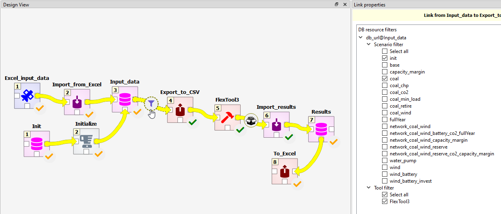
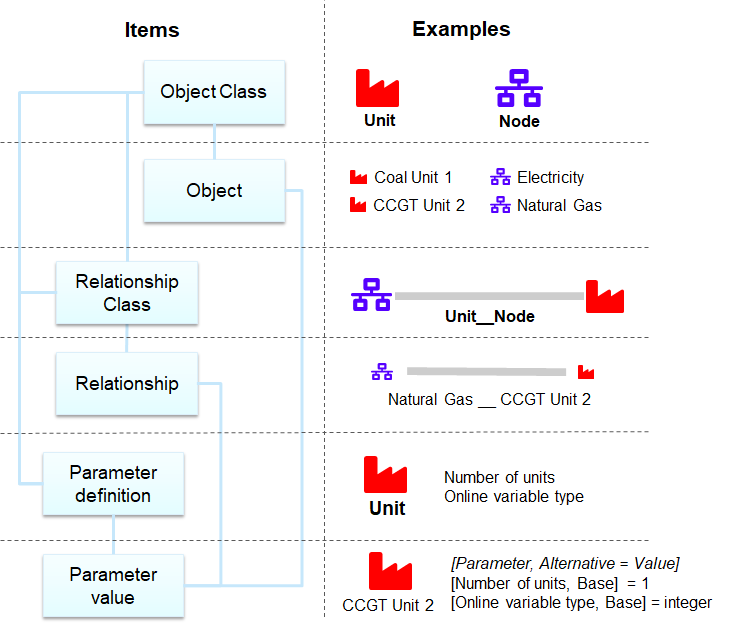
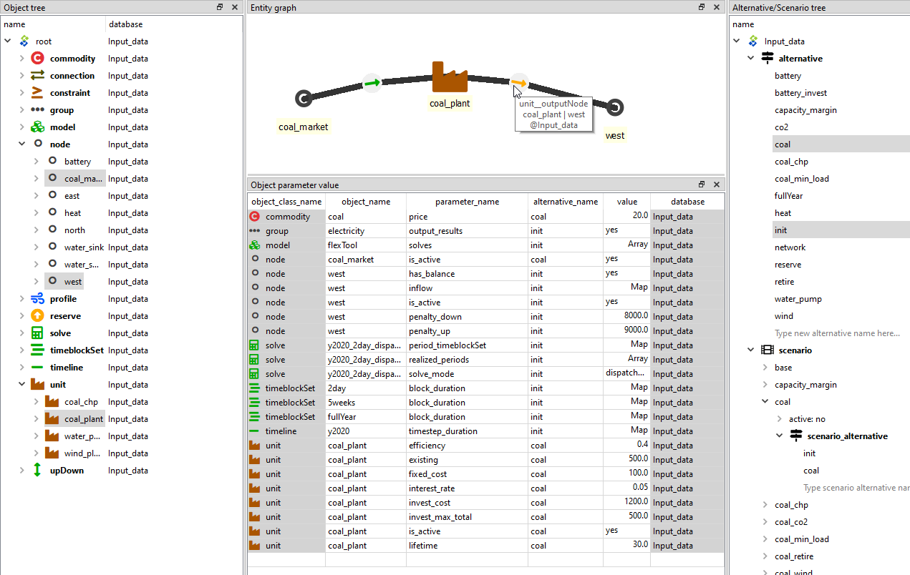

IRENA FlexTool workflow shortly explained
IRENA FlexTool uses Spine Toolbox as a workflow and data manager. Open IRENA FlexTool with Spine Toolbox (Open project..., navigate to the IRENA FlexTool and choose Ok). In other words, the IRENA FlexTool repository contains a Spine Toolbox project (in '.spinetoolbox' folder). A regular user is supposed to only change data in the Input_data and Results data stores as well as to choose scenarios to be executed in the arrows leaving these data stores. It is also possible to create your own workflow from the components provided in the '.spinetoolbox/specifications' folder. First, create a new project (in a new, separate, folder) and then, using the '+ From file...' button in the Spine Toolbox toolbar, add the workflow components you want. In this way, you are free to modify the workflow without affecting the git-controlled workflow from the IRENA FlexTool repository (that is modified by the developers). Please note, that the new project will then be in a different folder than the tool specifications, which will remain in the IRENA FlexTool repository folder and can be updated through git.
If you are using the IRENA FlexTool browser-interface, then you will not directly see the Spine Toolbox workflow, but the FlexTool web-server will be executing parts of the workflow in the background as you develop and run the model.

The panel on the right shows the different scenarios that are available in the database.
The user can choose which scenarios will be processed by the workflow (until item Results,
which combines the results into one database). Spine Toolbox can execute scenarios in parallel
(as long as using 'work directories' is defined in FlexTool item).
Input data workflow item points to a sqlite file that needs to have IRENA FlexTool data format (that uses Spine Toolbox database definition). The template file has the right format and contains empty object classes corresponding to FlexTool data structure as well as parameters available in each object class. Double clicking the Input data workflow item will open the database editor. Just selecting the Input data workflow item allows one to change the file (make a copy of the existing Input_data.sqlite using the file system of your OS and point to the copy).
Init workflow item points to a sqlite file with predefined data that showcases IRENA FlexTool functionality. Some of the scenarios from there are used in the user guide. Initialize copies the contents of the Init database to the Input data database. The scenario filter in the arrow after the Init database can be used to choose what data will be copied.
Export_to_csv workflow item is a Spine Toolbox exporter that has been set to write csv files that IRENA FlexTool model code will read.
FlexTool workflow item contains a Python script that calls FlexTool model code for each solve and passes data between these solves. FlexTool model is written in MathProg and it calls HiGHS solver by default to solve the model. The outputs are csv files.
Import_results is a Spine Toolbox importer that takes the output csv files and writes them in the Results database.
Excel_input_data and Import_from_Excel allow users to use Excel as an interface for the input data. They are optional parts of the workflow.
To_Excel worfklow item will export most scenario results to a simple Excel file. One way to utilize this is by creating another Excel file that draws figures from the result Excel file that is then updated by the workflow.
The browser interface of FlexTool also runs part of this same workflow (Export_to_csv --> FlexTool --> Import_results). The server takes a copy of the workflow (inside the user_projects) folder and uses Spine Toolbox to execute the scenarios.
More instructions for Spine Toolbox in Toolbox User Guide.
Data structure in Spine databases
Spine databases use Entity-Attribute-Value with Classes and Relationships (EAV-CR). Entity classes define the categories of data. These can be one-dimensional object classes (e.g. node or unit) or multi-dimensional relationship classes formed from the object classes (e.g. unit__node). Spine Toolbox user can define these classes to suit their modelling needs. For FlexTool the entity classes have been pre-defined. Instead, FlexTool user needs to add the entity instances: objects and relationships that define the particular network structure to be modelled (e.g. coal_plant unit or west node). Furthermore, each entity class (object or relationship) can hold only parameters that have been defined for that particular class. Again, FlexTool user does not need to add the parameter types - the user should just add needed parameter values for the entities the user has created.

Database editor in brief
Spine Toolbox database editor can be used to modify data and to build scenarios.
The figure below shows an example where parameter data from two alternatives
have been selected for display (in the data table). The object tree on the left
selects two nodes ('coal_market' and 'west') as well as one unit ('coal_plant').
Consequently, one can use both whole classes and individual entities (members of the classes) as data filters.
The results of this filter are visualized in the graph on top. The mouse pointer is showing a relationship
entity that connects the 'coal_plant' and its output node 'west'. The relationship
entity is defined in a relationship tree, which is not visible here.
The scenario tree (on the right, below the alternative tree) shows that
the 'coal' scenario is formed by taking all data from the 'init' alternative
and then all data from the 'coal' alternative. If there would be same parameter
defined for both scenarios, then the latter alternative would overwrite
the first alternative.
Whenever data is modified, the data is staged in separate database tables (although not directly visible to user). The changes will be applied only once the user commits the changes and leaves a commit message to indicate what has been done. The commit can be done with ctrl-enter or from the database editor menu (triple bar at top-right).
The database editor menu has options for how to display the data: table view, different pivot views and a graph view. It also contains a tool to delete data (purge) and decrease database size by removing unused allocations (vacuum). You can also bring back dock windows that have been closed by the user. History will show the history of data changes based on the commits made by the user.

More on Spine Database editor in Database Editor User Guide.